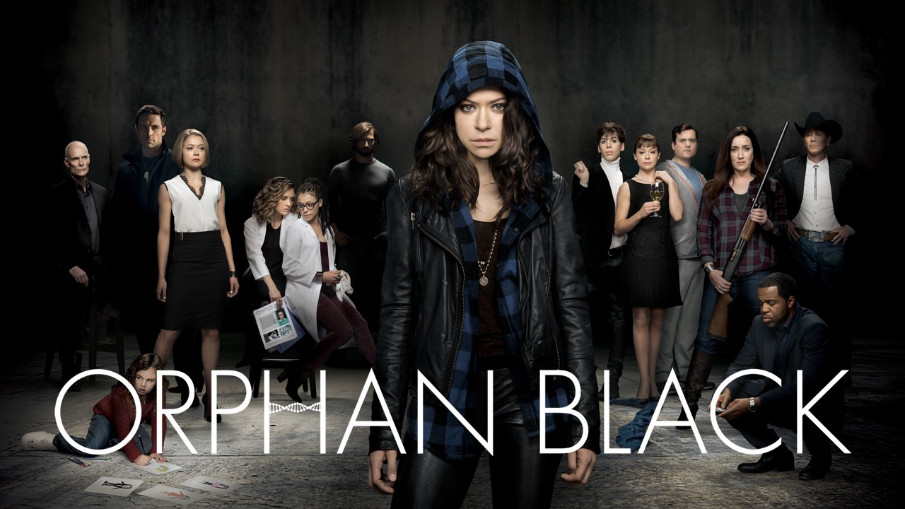
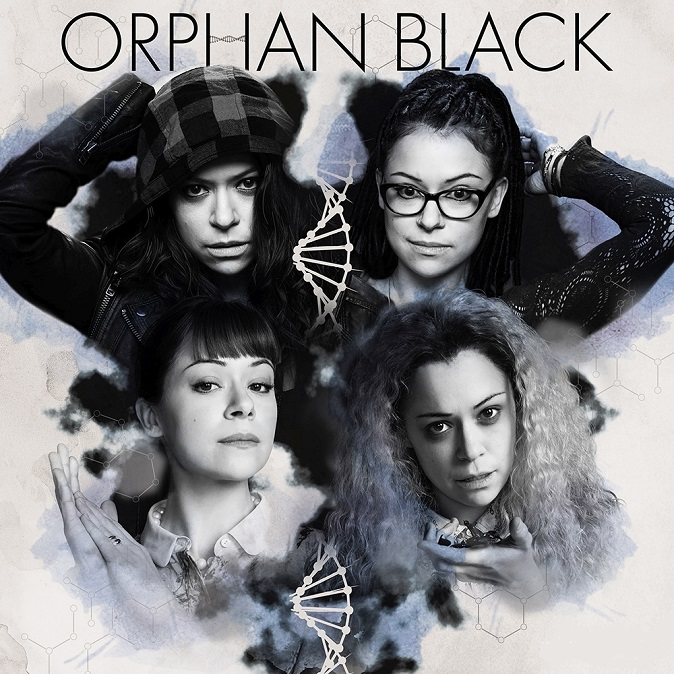
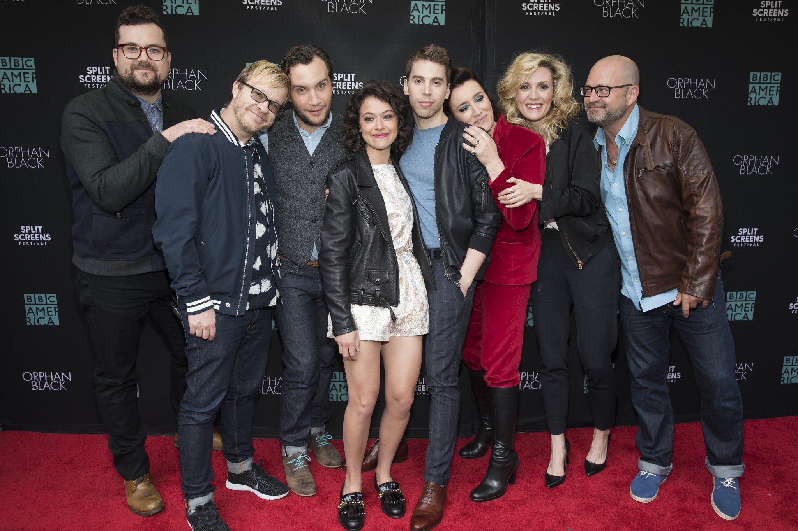

Orphan Black - The TV Show
Orphan Black is a Canadian science fiction thriller television series created by screenwriter Graeme Manson and director John Fawcett, starring Tatiana Maslany as several clones. The series focuses on Sarah Manning, a woman who assumes the identity of one of her fellow clones, Elizabeth Childs, after witnessing Childs' suicide. The series raises issues about the moral and ethical implications of human cloning and its effect on identity.
The series is also known for its fan base across social media platforms who identify as #CloneClub.
The series is produced by Temple Street Productions, in association with BBC America and Bell Media's Space. It premiered on March 30, 2013, on Space in Canada and on BBC America in the United States. On June 16, 2016, the series was renewed for a fifth and final 10-episode season, which premiered on June 10, 2017. An aftershow, After the Black, began airing in the third season on Space and was acquired by BBC America for the fourth season.
Trailer
Awards
- The Show
- Canadian Screen Awards
- Best Dramatic Series - 2014/2015/2017
- Constellation Awards
- Best Science Fiction Television Series of 2013 - 2014
- Directors Guild of Canada Awards
- Best Drama Television Series - 2015
- Hugo Awards
- Best Dramatic Presentation, Short Form - 2015
- IGN Awards
- Best TV Sci-Fi Series - 2013
- Peabody Awards
- Peabody Award - 2014
- Tubey Award
- Most Underrated Show - 2013
- Tatiana Maslany
- Emmy Awards
- Outstanding Lead Actress in a Drama Series - 2016
- Canadian Screen Awards
- Best Performance by an Actress in a Continuing Leading Dramatic Role - 2014/2015/2016/2017
- EWwy Awards
- Best Actress in a Drama Series - 2013/2015
- Gold Derby TV Awards
- Breakthrough Performer of the Year - 2013
- Best Drama Actress - 2014/2015
- Constellation Awards
- Best Female Performance in a 2013 Science Fiction Television Episode - 2014
- Outstanding Canadian Contribution to Science Fiction Film or Television - 2014
- ACTRA Toronto Awards
- Outstanding Performance - 2015
- Gracie Awards
- Outstanding Female Actor in a Breakthrough Role - 2014
- IGN Awards
- Best TV Actress - 2013
- IGN People's Choice Awards
- Best TV Actress - 2014
- TCA Awards
- Individual Achievement in Drama - 2013
- Young Hollywood Awards
- Breakthrough Performance - 2013
- Jordan Gavaris
- Canadian Screen Awards
- Best Performance by an Actor in a Featured Supporting Role in a Dramatic Program or Series - 2014/2015
- Constellation Awards
- Best Male Performance in a 2013 Science Fiction Television Episode - 2014
- Production
- Canadian Screen Awards
- Best Direction in a Dramatic Series - 2014/2015/2017
- Best Photography in a Dramatic Program or Series - 2014/2015/2016/2017
- Best Picture Editing in a Dramatic Program or Series - 2014/2015/2016
- Best Production Design or Art Direction in a Fiction Program or Series - 2014/2017
- Best Original Music Score for a Series - Trevor Yuile - 2015/2016/2017
- Best Achievement in Casting - 2015
- Best Achievement in Makeup - 2016
- Canadian Cinema Editors Awards
- Stephen Lawrence - 2014
- Directors Guild of Canada Awards
- Best Picture Editing - Television Series - 2014/2016
- Best Direction Television Series - 2014
- Best Production Design – Television Series - 2016/2017
- Prix Aurora Awards
- Best Visual Presentation - 2016
- Writers Guild of Canada Awards
- Television Drama - 2014/2015/2016